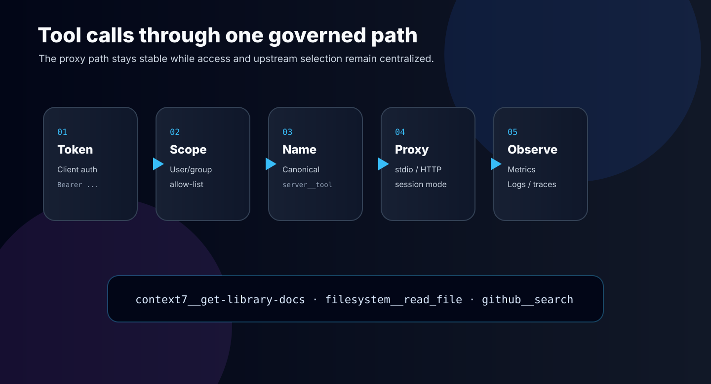
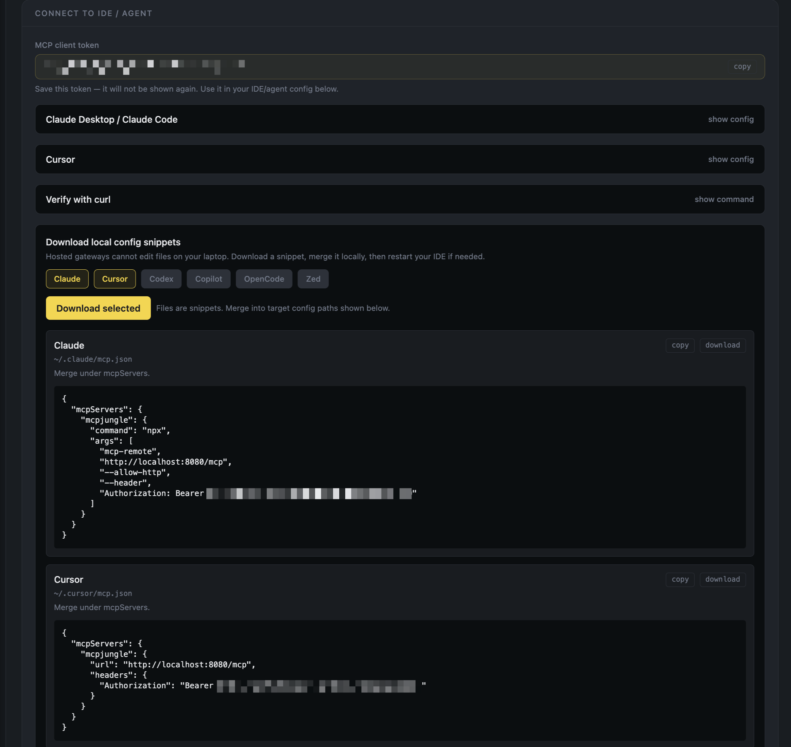
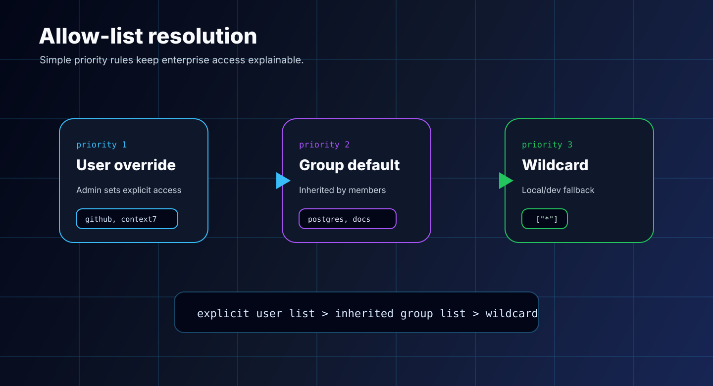
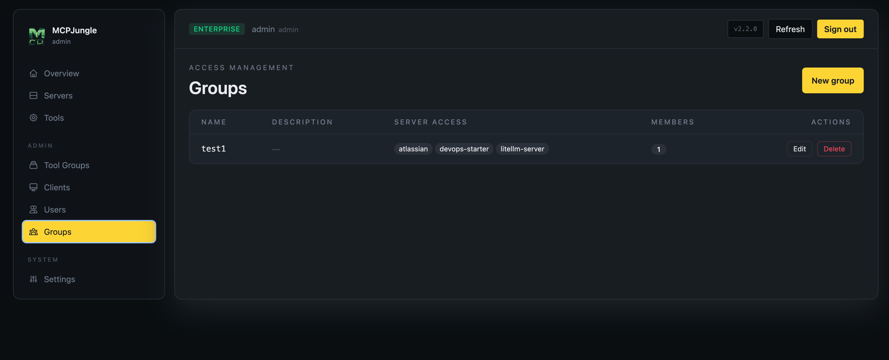
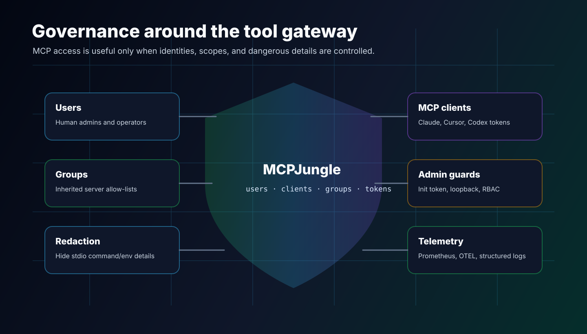
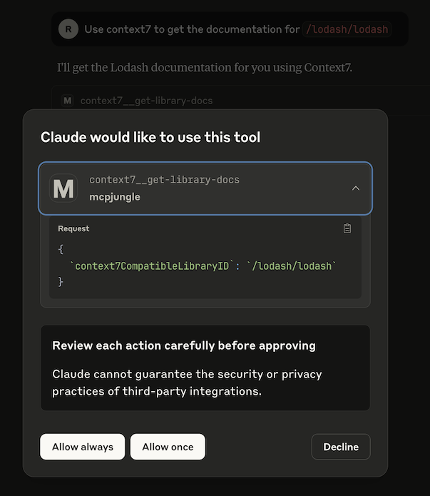

The problem
Once I started using more AI clients, MCP configuration became messy very quickly. Claude Desktop had one config. Cursor had another. Codex had its own MCP setup. Every new server meant more duplicated JSON, more local paths, more tokens, and more chance that one client behaved differently from the others.
MCP is powerful because it gives AI clients access to real tools, prompts, and resources. But without a control point, the setup spreads everywhere. Filesystem, GitHub, documentation, browser, database, and internal tools all become separate entries copied into separate clients.
The real requirement: one MCP endpoint that every client can use, with server registration and access control managed in one place.
I wanted something that works locally for my own machine, but can also grow into shared infrastructure for a team. Local mode should be simple. Enterprise mode should have users, tokens, groups, and observability.
That is the story behind MCPJungle.
Gateway model
MCPJungle is a self-hosted MCP gateway and registry. Instead of wiring every upstream MCP server directly into every AI client, I register servers once in MCPJungle. Claude, Cursor, Codex, Copilot, or a custom agent connects to one endpoint.
The mental model is simple:
- Upstream servers expose the actual capabilities.
- MCPJungle is the control plane and unified gateway.
- AI clients consume one endpoint instead of many server configs.
That changes the operational shape. Adding a new MCP server becomes a registry operation, not a copy-paste operation across every AI client.

mcpjungle register --name context7 --url https://mcp.context7.com/mcp
Then the client config can stay stable:
{
"mcpServers": {
"mcpjungle": {
"command": "npx",
"args": ["mcp-remote", "http://localhost:8080/mcp", "--allow-http"]
}
}
}
Dashboard
The CLI is useful, but a gateway also needs visibility. I added an embedded React dashboard at /ui so the system is inspectable without jumping through terminal commands every time.

The dashboard gives me pages for servers, tools, tool groups, clients, users, groups, and settings. It is not just a pretty wrapper. It makes the gateway understandable when there are many servers and many exposed tools.
One practical page is the settings view. It gives client config snippets so connecting Claude, Cursor, or another tool is less error-prone.

This matters because AI tooling often fails from tiny config mistakes: wrong URL, stale token, missing header, wrong transport. A dashboard turns those details into explicit system state.
Groups
The big feature in my fork is group management. Upstream MCPJungle already provides the gateway foundation. My fork adds a management layer for teams: admins can create groups, assign users, and define server allow-lists at the group level.


The allow-list resolution is deliberately boring:
1. User explicit allow-list 2. Group allow-list 3. Wildcard ["*"] fallback
This keeps the rules easy to explain. If an admin sets a user-specific allow-list, it wins. If not, the user inherits the group list. If neither exists, development mode can fall back to everything.
| Identity | Purpose |
|---|---|
| User | Human operator using the dashboard, CLI, or API |
| MCP client | Non-human identity for Claude, Cursor, Codex, or an agent |
| Group | Shared server allow-list inherited by member users |
| Tool group | Curated subset of tools exposed through a narrower MCP endpoint |
That split is important. A developer might belong to a data-tools group and receive access to Postgres and MongoDB MCP servers, while a frontend group gets documentation, browser, and design tools. The AI client only sees what the token is allowed to use.
Security controls

An MCP gateway is sensitive infrastructure. It sits between AI agents and tools that can touch files, repos, services, and sometimes internal systems. So the gateway cannot just be a convenient proxy.
The fork includes several hardening decisions:
/initis restricted to loopback by default, or requires an init token for remote setup./clients/self/apply-configis disabled by default and only enabled explicitly for local use.- Stdio commands, args, and env values are redacted for non-admin API responses.
- Self-service client creation is scoped to the current user.
- Internal errors return generic messages while details stay in server logs.
- Enterprise mode requires bearer tokens and admin-gated management routes.
Those controls are not glamorous, but they matter. A tool registry becomes part of the trust boundary. When agents can call tools, the control plane needs boring guardrails: identity, scope, redaction, and audit-friendly behavior.
MCP tooling should be easy to connect, but not easy to accidentally overexpose.
Stack
MCPJungle is built as a small platform, not only a CLI wrapper. The backend is Go, with Gin for the HTTP API, GORM for persistence, Cobra for CLI commands, and mcp-go for protocol integration. The UI is React, TypeScript, Vite, Tailwind, React Router, and TanStack Query.
| Layer | Technology |
|---|---|
| Backend | Go 1.24, Gin, GORM, mcp-go, Cobra |
| Frontend | React 19, TypeScript, Vite, Tailwind CSS |
| Database | SQLite for local/dev, PostgreSQL for production |
| Observability | OpenTelemetry, Prometheus, zap logging |
| Deployment | Docker, distroless image, Helm chart, docker-compose |
The important part is that local and team usage share the same product shape. I can run SQLite locally with almost no ceremony, then deploy with PostgreSQL, tokens, and a Helm chart when the gateway becomes shared infrastructure.

What I learned
The lesson is similar to the n8n gateway story: when something becomes central to daily work, do not let every client manage its own copy of the truth.
For MCP, the control point is the registry and gateway. Register servers once, expose a stable endpoint, scope access with tokens and groups, and make the system visible through a dashboard.
Next improvements
- Better audit trail for tool invocations and admin changes.
- More polished Helm deployment defaults for team installs.
- Stronger dashboard flows for token rotation and config export.
- More granular per-tool policies beyond server allow-lists.
- More docs for AI agents consuming the MCPJungle docs endpoint directly.
MCPJungle started as a way to clean up my local AI tool setup. It is becoming a small internal platform pattern: one endpoint, one registry, one place to govern what AI clients can actually touch.